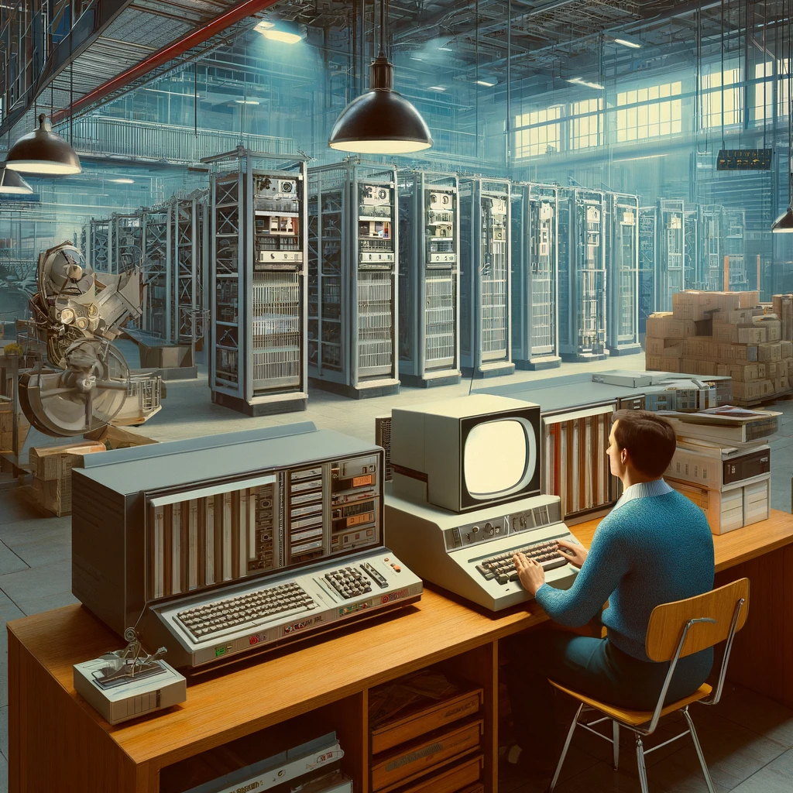
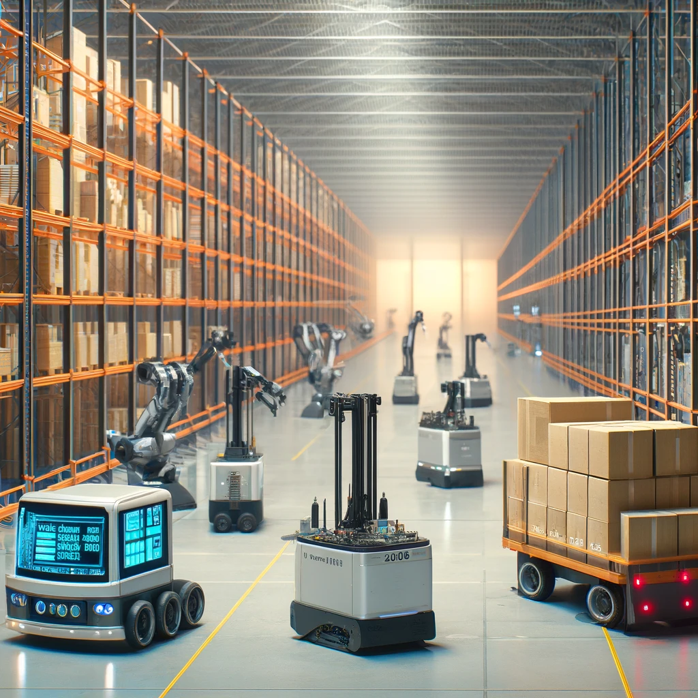
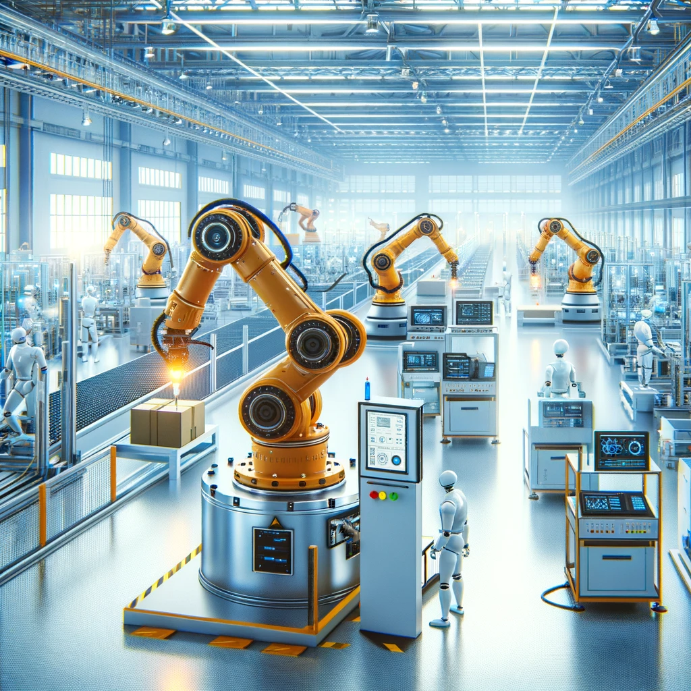

Historia de la Automatización
Una breve historia de la evolución de la automatización en almacenes.
-

1950s
Comienzos de la Automatización
La automatización de almacenes comenzó en los años 50 con la introducción de carretillas elevadoras motorizadas y sistemas de almacenamiento mecanizados.
-

1970s
Primeros Sistemas Automatizados
Durante los años 70, se introdujeron los primeros sistemas de almacenamiento y recuperación automatizados (AS/RS), que mejoraron la eficiencia y la precisión en el almacenamiento de mercancías.
-
1990s
Avances en la Tecnología de la Información
En los años 90, la integración de software de gestión de almacenes (WMS) y sistemas de seguimiento por RFID mejoraron aún más la automatización y el control de inventarios.
-

2000s
Robótica y Automatización Avanzada
La década de 2000 vio el auge de los robots de picking y los vehículos de guiado automático (AGVs), que permitieron una mayor flexibilidad y eficiencia en las operaciones de almacén.
-

2020s
Automatización Inteligente
En la actualidad, la automatización de almacenes incorpora tecnologías avanzadas como la inteligencia artificial, el aprendizaje automático y la visión artificial para optimizar aún más las operaciones y la toma de decisiones.
-
Sé Parte
De Nuestra
Historia!